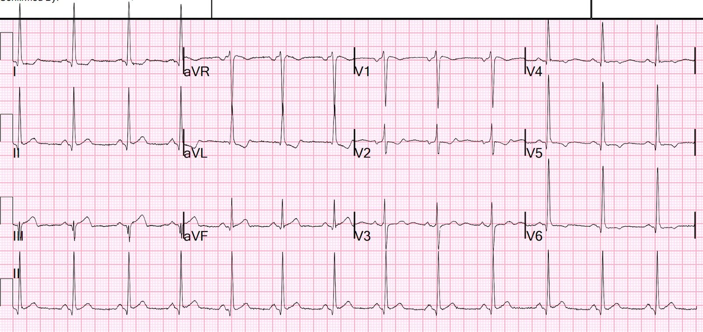
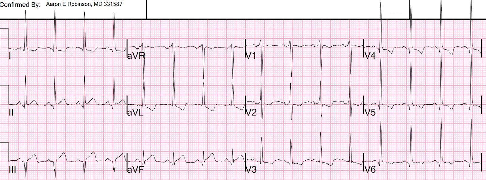
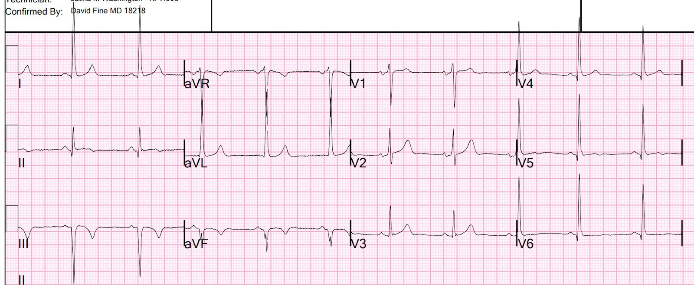
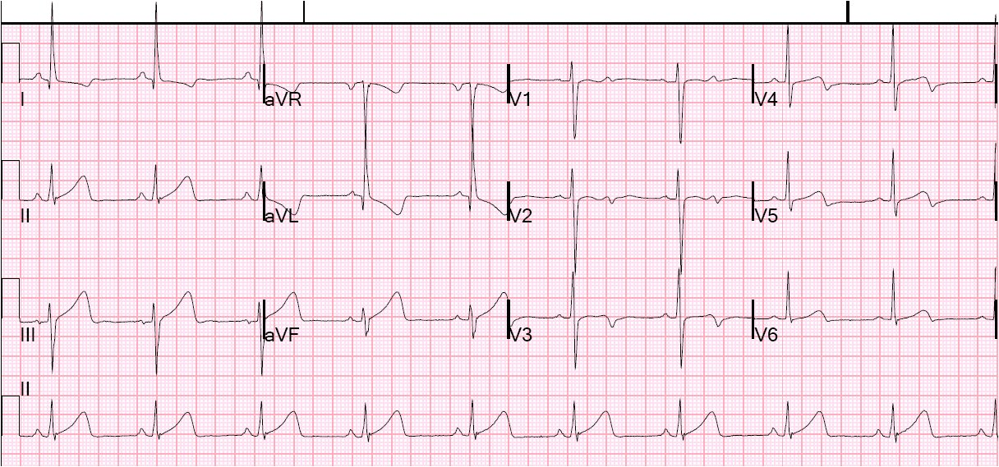
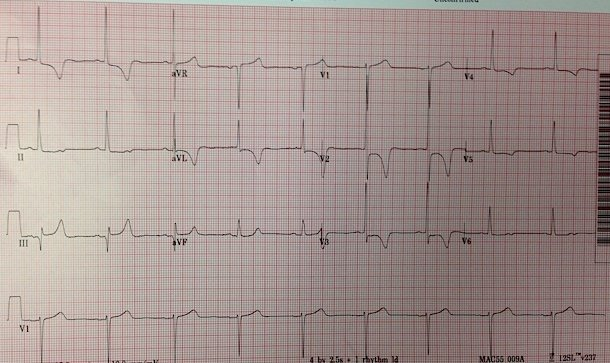
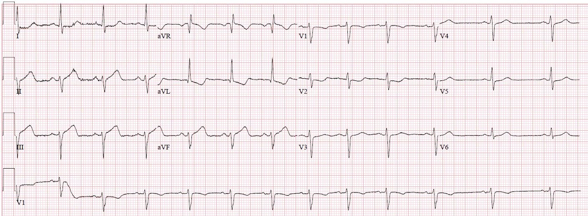
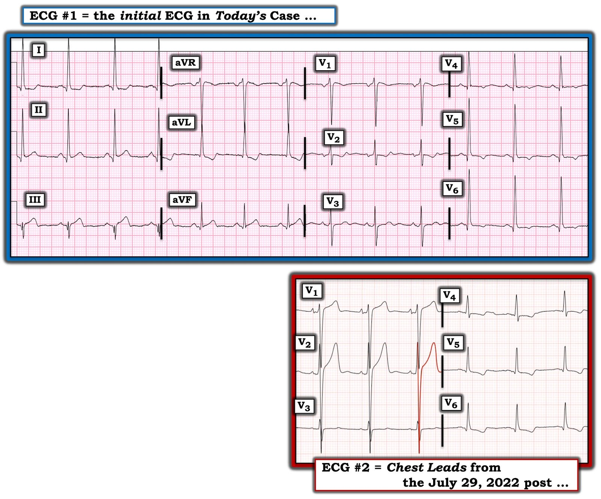

30/09/2022 — Có phải tất cả những dấu hiệu ST-T này đều do LVH?
Bản dịch tiếng Việt của bài "Are all of these ST-T findings due to LVH?" – Dr. Smith’s ECG Blog. Giữ nguyên toàn bộ 8 hình ảnh của bản gốc.
Tôi nhận được điện tâm đồ này qua tin nhắn:


Bạn nghĩ gì? Tôi đã nhắn lại điều gì?
Điện tâm đồ này có giá trị chẩn đoán OMI cấp thành dưới-sau. Đây là những gì tôi đã nhắn lại:
“Ca này khó vì nằm trong bối cảnh phì đại thất trái. Và tôi lo rằng bác sĩ tim mạch sẽ nói rằng tất cả chỉ là do LVH. Nhưng tôi khá chắc chắn rằng điện tâm đồ này có giá trị chẩn đoán OMI cấp. Và nếu bạn tìm được một điện tâm đồ cũ, nó sẽ không trông như thế này.”
“Xem V2: có đoạn ST dốc xuống. Sóng T ở chuyển đạo III quá lớn so với sóng S nhỏ như vậy. Có biến dạng phần cuối QRS (terminal QRS distortion) ở aVF. ST-T ở aVF không ngược hướng như bạn sẽ kỳ vọng khi có LVH, và có đoạn ST thẳng đuỗn.”
Tôi gửi nó cho Pendell, và anh ấy lập tức nhắn lại:
“OMI thành dưới-sau rõ đẹp. Dễ bị bỏ sót.”
Bác sĩ gửi điện tâm đồ cho tôi là một chuyên gia siêu âm cấp cứu rất giỏi, đã qua đào tạo chuyên sâu (fellowship). Chị ấy đã làm siêu âm tim tại giường và không thấy rối loạn vận động thành nào.
Sau đó, tôi được nghe bệnh sử:
Một người đàn ông 40 mấy tuổi, tiền sử chỉ đáng chú ý tăng huyết áp, đến khoa cấp cứu (ED) vì đau ngực khởi phát cấp, kèm vã mồ hôi và khó thở.
Vào thời điểm ghi điện tâm đồ thứ 2, cơn đau ngực của bệnh nhân đang đỡ dần nhưng vẫn còn. Trước đây chưa từng có cơn đau ngực tương tự.
Bệnh nhân đến qua khu phân loại (triage) (không phải bằng xe cứu thương) 1.25 giờ sau khi khởi phát đau, và điện tâm đồ được ghi thêm 27 phút sau đó (khoa cấp cứu của chúng tôi hoàn toàn quá tải với những bệnh nhân “lưu giữ chờ nhập viện” (boarding) tại khoa cấp cứu, và do đó khu phân loại cũng quá tải hằng ngày)
Phòng thông tim được kích hoạt, và điện tâm đồ thứ 2 được ghi 55 phút sau điện tâm đồ đầu tiên, trong khi chờ nhóm thông tim:


Các dấu hiệu trước đó tăng nhẹ.
Chụp mạch vành:
RCA: ưu thế. Nó cấp máu cho một RPDA (động mạch liên thất sau phải) cỡ trung bình và một RPLA (nhánh sau bên phải) nhỏ. Nó bị tắc do huyết khối hoặc do thuyên tắc ở đoạn xa, tại chỗ chia đôi thành RPDA và RPLA. Đã đặt stent thành công.
Siêu âm tim chính quy có cản âm bọt Definity:
Giảm nhẹ chức năng tâm thu thất trái; phân suất tống máu thất trái ước tính là 45%.
Rối loạn vận động thành khu trú - các đoạn thành dưới từ giữa đến xa (“thành sau” không còn được công nhận là một thành trên siêu âm tim, nhưng điều này tương đương một nhồi máu cơ tim thành dưới và thành sau)
Troponin I độ nhạy cao (hs troponin I) đo được cao nhất (lúc 6 giờ, sau PCI — vốn giải phóng lượng troponin “bị dồn nén”) = 24, 500 ng/L.
Một điện tâm đồ được ghi vào ngày hôm sau:


Sóng Q thành dưới và sóng T tái tưới máu (đảo ngược), cùng với sóng T tái tưới máu ở V2 và V3 (dương, to ra)
Dưới đây là một số bài liên quan:
Inferior MI? Or LVH? (Nhồi máu cơ tim thành dưới? Hay LVH?)


Is this STEMI? Pattern Recognition is Key (Đây có phải STEMI? Nhận diện hình ảnh là mấu chốt)


Do you understand these T-wave inversions? (Bạn có hiểu những sóng T đảo ngược này?)


1. LVH có thể giả dạng hoặc che lấp các dấu hiệu của OMI
2. Không phải mọi OMI diện rộng thấy rõ trên điện tâm đồ đều có thể nhìn thấy trên siêu âm tim tại giường. Siêu âm tim chính quy có cản âm bọt là cách duy nhất để loại trừ rối loạn vận động thành. Có thể đánh dấu mô (speckle tracking) cũng gần tốt bằng.
Xem các bài sau về siêu âm tim đánh dấu mô (Speckle Tracking) tại khoa cấp cứu:
Echocardiography, even (or especially) with Speckle Tracking, can get you in trouble. The ECG told the story. (Siêu âm tim, ngay cả (hoặc nhất là) khi có đánh dấu mô, có thể khiến bạn gặp rắc rối. Điện tâm đồ đã kể câu chuyện.)
What happens when a patient with LAD OMI does not go immediately to the cath lab? (Điều gì xảy ra khi bệnh nhân OMI do LAD không được đưa ngay vào phòng thông tim?)
IVCD, Saddleback STE in III, with reciprocal STD in aVL: Is it pseudoOMI or OMI? Echo with Speckle Tracking gives the answer. (IVCD, ST chênh lên hình yên ngựa ở III, kèm ST chênh xuống soi gương ở aVL: giả OMI hay OMI? Siêu âm tim đánh dấu mô cho câu trả lời.)
ST Elevation and QS-waves in a patient with Dyspnea (ST chênh lên và sóng QS ở một bệnh nhân khó thở)

===================================
BÌNH LUẬN CỦA TÔI, bởi KEN GRAUER, MD (30/9/2022):
===================================
Bài hôm nay của Dr. Smith củng cố một khái niệm quan trọng và luôn đầy thách thức — Làm thế nào để đánh giá OMI ở bệnh nhân có LVH?
- Tôi tập trung bình luận vào một vài khía cạnh bổ sung cho những gì Dr. Smith đã bàn ở trên, mà tôi hy vọng sẽ hữu ích để tiếp cận tình huống nan giải chẩn đoán này.
- Để cho rõ, trong Hình 1 — tôi đã đưa lại điện tâm đồ ban đầu được nhắn cho Dr. Smith mà không kèm bất kỳ bệnh sử nào. Để so sánh — tôi đã thêm các chuyển đạo ngực của một bệnh nhân có LVH nhưng không có OMI cấp (lấy từ bài ngày 29 tháng Bảy năm 2022 trên Dr. Smith’s ECG Blog).


SUY NGHĨ CỦA TÔI về ca hôm nay:
Theo Dr. Smith: Những lý do khiến dù có LVH — điện tâm đồ #1 vẫn có giá trị chẩn đoán OMI cấp dưới-sau bao gồm:
- Theo Dr. Smith: “Có đoạn ST dốc xuống ở chuyển đạo V2”.
- Theo Dr. Smith: “Sóng T ở chuyển đạo III quá lớn so với sóng S nhỏ như vậy. Có biến dạng phần cuối QRS ở chuyển đạo aVF — và đoạn ST ở chuyển đạo này thẳng đuỗn”.
Bên cạnh nhận xét của Dr. Smith — tôi xin bổ sung những điểm sau:
- Hình dạng bất thường của sóng ST-T ở chuyển đạo V2 tạo thành một nghiệm pháp soi gương (Mirror Test) dương tính. Ngay cả khi không có LVH — sóng R khởi đầu cao hơn dự kiến ở chuyển đạo V2 và hình dạng sóng ST-T ở chuyển đạo này đã ngay lập tức gợi ý với tôi rằng nhiều khả năng có OMI thành sau (Xin xem Bình luận của tôi ở cuối trang trong bài ngày 21 tháng Chín năm 2022 gần đây của chúng tôi — trong đó tôi điểm lại chi tiết cách tôi sử dụng nghiệm pháp soi gương).
- Trong một bản ghi bình thường (tức là không có LVH) — đoạn ST ở các chuyển đạo V2 và V3 rất thường chênh lên nhẹ, dốc lên thoai thoải — dẫn vào một sóng T dương. Vì vậy, ngoài hình dạng chắc chắn bất thường của sóng ST-T ở chuyển đạo V2 — tôi ngay lập tức nghĩ rằng chuyển đạo V3 trong điện tâm đồ #1 rất đáng ngờ là sự tiếp nối của một quá trình cấp tính.
- Việc biết rằng các chuyển đạo V2 và V3 bất thường đã nhanh chóng thuyết phục tôi rằng sóng ST-T lớn không tương xứng (quá đầy đặn — hypervoluminous) ở chuyển đạo III gần như chắc chắn là một sóng T tối cấp. Và ngay khi tôi biết bệnh nhân này đến viện vì đau ngực mới khởi phát — chẩn đoán OMI cấp dưới-sau là chắc chắn cho đến khi chứng minh được điều ngược lại.
- ĐIỂM THEN CHỐT (PEARL): Theo kinh nghiệm của tôi, phức bộ QrS phân mảnh ở chuyển đạo III gần như có giá trị chẩn đoán nhồi máu vào một thời điểm nào đó. Không chỉ đơn thuần là một sóng lệch âm (tức là sóng Q) — việc thấy một sóng lệch âm ban đầu (sóng Q) — sau đó chuyển dương thoáng qua (sóng r nhỏ mà chúng ta thấy ở chuyển đạo III) — nhưng rồi lại nhanh chóng đi xuống (thành sóng S sâu) — là dấu hiệu của sẹo, và thường gặp nhất là của nhồi máu vào một thời điểm nào đó. Với sóng ST-T tối cấp ở chuyển đạo III — điều này gợi ý mạnh mẽ một quá trình cấp tính đang diễn ra!
Sóng ST-T nên trông như thế nào khi có LVH?
Tôi đã nhiều lần điểm lại cách tiếp cận của mình đối với chẩn đoán LVH trên điện tâm đồ trong Dr. Smith’s ECG Blog (Xem Bình luận của tôi trong bài ngày 20 tháng Sáu năm 2020 trên Dr. Smith’s Blog — cùng nhiều bài khác).
- Sự hiện diện của điện thế tăng trên điện tâm đồ mà không có bất thường sóng ST-T phù hợp với “tăng gánh” thất trái (hoặc hình ảnh “tương đương tăng gánh” (strain equivalent)) — thì không đặc hiệu cho tình trạng lớn buồng thất trái thực sự. Trong những trường hợp như vậy (NẾU cần biết) — cần siêu âm tim để phân biệt giữa biên độ QRS tăng lành tính trên điện tâm đồ với lớn buồng tim thực sự.
- Ngược lại — ở bệnh nhân có “đúng bệnh” (tức là suy tim, tăng huyết áp lâu năm) — ở một độ tuổi nhất định (tức là người trẻ tuổi thường biểu hiện biên độ QRS tăng không do lớn buồng tim) — việc thấy tiêu chuẩn điện thế của LVH + thay đổi sóng ST-T kiểu “tăng gánh“ có độ đặc hiệu hơn 90% cho tình trạng lớn thất trái thực sự!
Thêm về ảnh hưởng của LVH lên điện tâm đồ:
Bệnh nhân có LVH rõ thường biểu hiện thay đổi sóng ST-T kiểu “tăng gánh” thất trái ở một hoặc nhiều chuyển đạo.
- Không phải mọi bệnh nhân có LVH đã được siêu âm tim xác nhận đều biểu hiện “tăng gánh” thất trái trên điện tâm đồ. Các nghiên cứu Framingham đã cho chúng ta biết rằng tiên lượng dài hạn bị ảnh hưởng bất lợi khi cả thay đổi điện thế lẫn thay đổi tái cực kiểu “tăng gánh” cùng hiện diện trên điện tâm đồ.
- Thay đổi sóng ST-T kiểu “tăng gánh” thất trái thường gặp nhất ở một hoặc nhiều chuyển đạo bên (tức là ở các chuyển đạo I, aVL; và/hoặc V4, V5, V6). Điển hình — đoạn ST đi xuống chậm, rồi đi lên nhanh hơn ở cuối đoạn ST.
- Một số bệnh nhân LVH (nhất là khi trục mặt phẳng trán thẳng đứng) — cũng biểu hiện thay đổi ST-T kiểu “tăng gánh” thất trái ở các chuyển đạo thành dưới.
- Một số bệnh nhân có sóng S ở các chuyển đạo trước đặc biệt sâu — biểu hiện hình ảnh “soi gương” (mirror-image) của “tăng gánh” thất trái dưới dạng sóng ST-T dương, thường kèm ST chênh lên ít nhiều ở các chuyển đạo trước này.
- Ảnh hưởng chính khác của LVH trên điện tâm đồ là sự gia tăng các lực hướng sang trái và ra sau có thể lấn át các lực hướng ra trước vốn có — với “kết quả chung” là tăng tiến sóng R bị chậm (đôi khi tới mức tạo ra phức bộ QS ở một hoặc nhiều chuyển đạo trước).
“Tăng gánh” thất trái — Còn ca hôm nay thì sao?
2 ví dụ điện tâm đồ tôi đưa ra trong Hình 1 tổng hợp các khái niệm nêu trên:
Điện tâm đồ #1 trong Hình 1:
- Tiêu chuẩn điện thế cho LVH được thỏa mãn ở nhiều chuyển đạo trong điện tâm đồ #1. Gồm: i) Một hoặc nhiều chuyển đạo chi có sóng R ≥20 mm; ii) R ở aVL ≥12 mm; iii) S sâu nhất ở V1,V2 + R cao nhất ở V5,V6 ≥35; và, iv) R ở V6 ≥18 mm.
- Một hình ảnh “tăng gánh“ thất trái kinh điển thấy ở chuyển đạo aVL (và ở mức độ ít hơn ở chuyển đạo I). Xin nhấn mạnh — hình dạng đoạn ST dốc xuống từ từ rồi trở về đường nền nhanh hơn ở chuyển đạo aVL điển hình đến mức, dù có thể có thêm ảnh hưởng của các thay đổi soi gương do OMI — tôi vẫn diễn giải hình dạng sóng ST-T ở các chuyển đạo bên cao này là điển hình của “tăng gánh” thất trái.
- Bệnh nhân trong ca hôm nay là một người đàn ông 40 tuổi bị tăng huyết áp — do đó, rõ ràng ông thuộc nhóm có tỷ lệ mắc cao hơn nhiều khả năng có LVH thực sự.
- Điểm MẤU CHỐT: Dù nhiều chuyển đạo cho thấy điện thế tăng rõ — các chuyển đạo ngực trong điện tâm đồ #1 đáng chú ý vì: i) Không có sóng ST-T chênh lên ở bất kỳ chuyển đạo trước nào; và, ii) Mặc dù có sóng T đảo ngược nông ở các chuyển đạo V5 và V6 — gần như không có ST chênh xuống dốc xuống từ từ ở các chuyển đạo này (như lẽ ra phải thấy ở một bệnh nhân như thế này, vốn có rất nhiều bằng chứng điện tâm đồ khác của LVH thực sự kèm “tăng gánh”).
- ĐIỀU CỐT LÕI về điện tâm đồ #1: Với bệnh sử đau ngực dữ dội mới khởi phát — kết luận hợp lý là việc thiếu các thay đổi “tăng gánh” thất trái điển hình ở các chuyển đạo ngực trước và bên là do OMI cấp dưới-sau đã tạo ra các thay đổi sóng ST-T ngược chiều, làm giảm bớt những gì lẽ ra chúng ta sẽ thấy do “tăng gánh” thất trái.
Các chuyển đạo ngực trong điện tâm đồ #2 ở Hình 1:
- Như đã nói ở trên — 6 chuyển đạo ngực trong điện tâm đồ #2 là của một bệnh nhân có LVH rõ nhưng không có OMI cấp.
- Như đôi khi vẫn xảy ra — Thay vì biểu hiện tăng biên độ sóng R ở các chuyển đạo ngực bên — bệnh nhân này lại biểu hiện sóng S ở các chuyển đạo trước cực kỳ sâu ở chuyển đạo V1 và đặc biệt là V2 (Tôi đã viền ĐỎ sóng S khổng lồ >30 mm ở chuyển đạo V2).
- Xét đến độ sâu của sóng S ở chuyển đạo V2 — ST chênh lên kèm sóng T lớn, nhọn ở chuyển đạo này không hề không tương xứng — và hoàn toàn là hậu quả của LVH rõ.
- Mặc dù các chuyển đạo ngực bên V5 và V6 chỉ cho thấy biên độ sóng R vừa phải — các chuyển đạo này vẫn biểu hiện hình dạng sóng ST-T rất điển hình của “tăng gánh” thất trái.
- KẾT LUẬN: Hãy đối chiếu lần cuối hình ảnh sóng ST-T phù hợp với “tăng gánh” thất trái ở các chuyển đạo ngực trước và bên của điện tâm đồ #2 — với việc thiếu những thay đổi như vậy ở các chuyển đạo ngực của điện tâm đồ #1 (trong đó các thay đổi sóng ST-T đã bị giảm bớt do tác động ngược chiều của OMI cấp dưới-sau đang diễn ra).